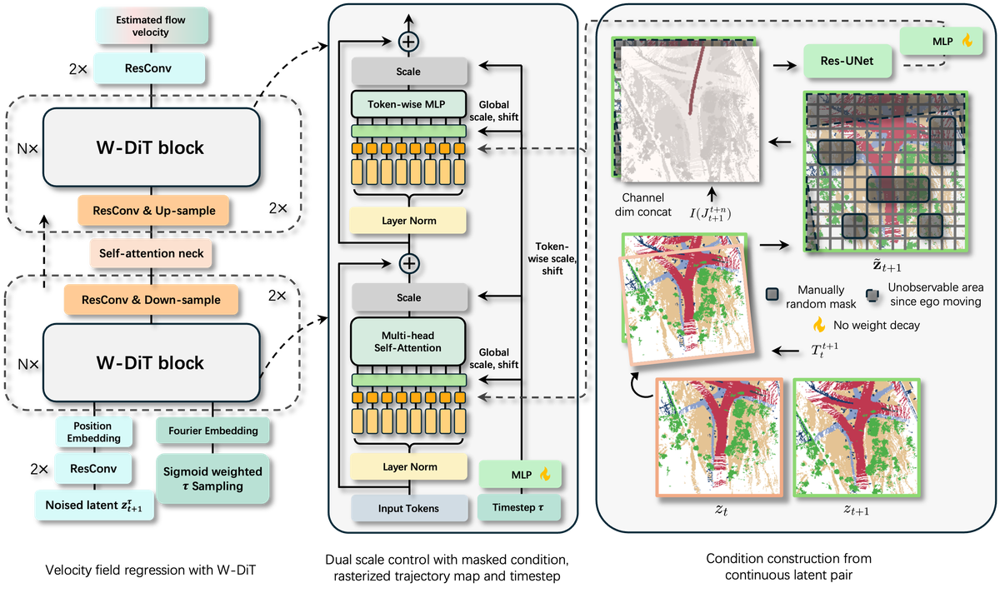

OccSim：使用长视野占用世界模型进行公里模拟
简单摘要
闭环评估对L4级自动驾驶系统的发展不可或缺。开环回放虽提供真实数据流但缺乏对自车行为的反应能力;基于几何的仿真器(如CARLA)虽支持交互性但存在严重的sim-to-real差距。本文提出一个全面的数据驱动仿真器必须满足四项要求:传感器真实感与语义丰富性、反应式多样化智能体、3D一致的世界动态、独立于日志的仿真。OccSim是首个由占栅格世界模型驱动的自动驾驶仿真器,仅需单帧静态图像和未来自车动作,且全程使用公开数据集训练,同时满足上述所有要求。
 图 1
图 1核心创新
1. 提出W-DiT,首个能够在复杂轨迹下稳定生成3000+步静态地图的世界模型(相比现有方法不到50帧,提升超过80倍)。
2. 揭示当前4D占栅格世界模型普遍借用视频生成领域架构的缺陷——忽视了3D空间的几何刚性和SE(3)等变性,导致自回归推理中误差逐步累积和模型崩塌。
3. 设计基于潜空间流匹配的布局生成器,在无历史日志条件下生成道路结构条件的交通流初始配置。
4. 首创基于占栅格世界模型的仿真范式,将静态世界生成和动态交通流生成解耦为两项协同生成任务。
技术细节

架构图：方法整体流程围绕 技术总览，通过应用空间多数投票机制，我们有力地修复了平面上的剩余间隙。我们迭代地修剪短的、嘈杂的支线，并引入节点收缩机制，将空间密集的连接簇合并为统一的超级节点，准确地反映复杂的现实世界交叉点。最后，为了精确隔离有效的地图入口和出口点，我们设计了一种新颖的双探针过滤机制。作者这样设计，是为了把这一节的输入、约束和输出关系讲清楚。
最终，该流程将生成的体素图转换为高保真、无死锁的拓扑图，为下游闭环规划和控制提供可靠的基础。基于提取的骨架，即我们引入了两阶段车道拓扑提取算法（算法3）。为了重建多车道结构，我们通过沿着参考轨迹的法向量进行正交偏移来生成显式平行车道。图 4：使用 10 个随机种子对 100 多个时间步长进行配对 MIoU 多样性和 Vendi 评分评估；在所有测试的生成方法中，我们的方法在推出过程中表现出最好的多样性
基于提取的骨架，即我们引入了两阶段车道拓扑提取算法（算法3）。为了重建多车道结构，我们通过沿着参考轨迹的法向量进行正交偏移来生成显式平行车道。获得所有几何信息后，我们在 Alg 中引入基于 2D-IDM 的模拟。
10.1 单帧融合的启发式
围绕 10.1 单帧融合的启发式，这一节先处理的是 在我们从基于 W-DiT 的世界模型中获得原始预测观测值后，我们使用以下算法将所有帧融合为。作者这样设计，是为了先把输入表示、约束条件或中间状态整理成后续模块能直接使用的形式。
10.2 分支路检测和拓扑提取
围绕 10.2 分支路检测和拓扑提取，然后，为了弥合下游多智能体模拟所需的离散占用网格和矢量化道路网络之间的差距，我们提出了一种鲁棒的拓扑提取和图细化算法。我们迭代地修剪短的、嘈杂的支线，并引入节点收缩机制，将空间密集的连接簇合并为统一的超级节点，准确地反映复杂的现实世界交叉点。最后，为了精确隔离有效的地图入口和出口点，我们设计了一种新颖的双探针过滤机制。作者这样设计，是为了把这一节的输入、约束和输出关系讲清楚。
10.3 车道拓扑提取
围绕 10.3 车道拓扑提取，之后，我们使用保留的图形信息来创建车道图。基于提取的骨架，即我们引入了两阶段车道拓扑提取算法（算法3）。为了重建多车道结构，我们通过沿着参考轨迹的法向量进行正交偏移来生成显式平行车道。作者这样设计，是为了把这一节的输入、约束和输出关系讲清楚。
10.4 基于 2D-IDM 的仿真
获得所有几何信息后，我们在 Alg 中引入基于 2D-IDM 的模拟。全局预计算（阶段1）和动态逐步执行（阶段2）。最后，通过 IDM 更新运动状态，并使用空间覆盖运算符 将动态 3D 资源按顺序渲染到裁剪后的静态背景上，以处理语义 Z 缓冲（步骤 2.1）。作者这样设计，是为了把这一节的输入、约束和输出关系讲清楚。
$$ P(\mathbf{z}_{1:K} | \mathbf{z}_0, J_{0:K+\sigma}) = \prod_{i=1}^{K} P_{\theta}(\mathbf{z}_{i} | \mathbf{z}_{i-1}, J_{i-1:i+\sigma-1}), $$
放在“长视野静态占用世界模型”这一部分看。这条式子描述了多个分量的聚合或逐步合成过程。作者用它把局部贡献、概率权重或多项损失累计成最终结果，从而把整条计算链路的汇总位置讲清楚。
$$ [\gamma_{\text{global}}, \beta_{\text{global}}, \alpha_{\text{global}}] = \text{MLP}_{\text{time}}(\tau), [\mathbf{\Gamma_{\text{token}}}, \mathbf{B}_{\text{token}}, \mathbf{A}_{\text{token}}] = \text{MLP}_{\text{cond}}(\hat{f}_{t+1}) $$
放在“长视野静态占用世界模型”这一部分看，作者重点不是孤立地罗列符号，而是交代 这一项中间量 如何承接前面的输入并把结果交给后续步骤。
$$ \gamma^{(i)} = \gamma_{\text{global}} + \mathbf{\Gamma_{\text{token}}}^{(i)}, \quad \beta^{(i)} = \beta_{\text{global}} + \mathbf{B}_{\text{token}}^{(i)}, \quad \alpha^{(i)} = \alpha_{\text{global}} + \mathbf{A}_{\text{token}}^{(i)} $$
放在“长视野静态占用世界模型”这一部分看，作者重点不是孤立地罗列符号，而是交代 这一项中间量 如何承接前面的输入并把结果交给后续步骤。
$$ \mathcal{L}_{\mathrm{total}}(\theta) = \mathbb{E}_{\tau, \epsilon, z_{t+1}, \mathbf{c}} \bigg[ \| v_\theta - (z_{t+1} - \epsilon) \|_2^2 + \lambda \tau^2\frac{\mathbf{M}_{\mathrm{mask}}}{|\mathbf{M}_{\mathrm{mask}}|}\mathrm{CE}\bigg(\mathcal{O}_{t+1}, \mathcal{D}(z_{t+1}^{\tau} + (1-\tau)v_\theta)\bigg) \bigg] $$
这条式子给出了噪声预测训练目标：模型在随机时间步接收带噪输入和条件信息，然后尽量把真实噪声估计准确。训练好这一项之后，反向采样时才能稳定地把噪声状态一步步拉回真实场景分布。
实验结论
为了解决第三个问题，我们通过零样本传输设置来评估动态仿真性能。定性地讲，任何超过此基线阈值的指标分数都表示完全无法使用的状态。在 OccFM 和 UniScenes 潜在空间中，我们的方法获得了最高的 Vendi 分数，表明生成的几何和语义结构更加丰富。
4.1 指标和数据集
继之前的工作之后，我们通过 2D/3D-FID、KID 和 MMD（如下所示）评估静态真实感。为了解决第三个问题，我们通过零样本传输设置来评估动态仿真性能。据我们所知，我们是第一个通过评估数据驱动模拟器在 4D 语义占用预测任务上的预训练效果来展示数据驱动模拟器的下游效用的人。
4.2 主要结果比较
值得注意的是，即使在最具挑战性的弯曲和闭环轨迹上进行评估，我们的方法仍然优于以前最先进的方法在更简单的直线轨迹上的结果。定性地讲，任何超过此基线阈值的指标分数都表示完全无法使用的状态。在 OccFM 和 UniScenes 潜在空间中，我们的方法获得了最高的 Vendi 分数，表明生成的几何和语义更加丰富。
4.3 消融研究
我们对 W-DiT 设计中提出的感知损失、网络架构和 SNR 加权进行了详细分析。W-DiT 的成功与这三个组成部分密不可分。显然，如果没有其中任何一个，在 500 帧规模下实现稳定的质量输出就变得具有挑战性。
| 1.1cm< Percep. | — | ||||||||
|---|---|---|---|---|---|---|---|---|---|
| Loss | Dual-head | — | |||||||
| injection | SNR | — | |||||||
| scaled | 1st | 5th | 10th | 30th | 50th | 100th | 500th | — | |
| 55 | 55 | 55 | 663.89 | 712.56 | 789.91 | 1023.51 | 1281.99 | 1587.21 | 1612.40 |
| 55 | 51 | 55 | 637.52 | 708.91 | 924.11 | 992.72 | 1206.50 | 1387.55 | 1672.43 |
| 51 | 51 | 55 | 676.98 | 652.91 | 711.66 | 782.25 | 801.67 | 852.30 | 901.57 |
| 51 | 51 | 51 | 665.23 | 630.34 | 645.96 | 687.90 | 698.87 | 712.65 | 744.71 |
理解评价
如果把这篇论文放回问题背景里看，它真正的价值在于：当将收集的 OccSim 数据集缩放至 5 倍大小时，零样本性能进一步提高至 74%，而相对于基于资产的模拟器的改进扩大至 22%。这说明作者不是只补一个局部模块，而是在重新组织问题该怎样被解决。
最能支撑这个判断的，还是实验给出的证据：结果比较中提供了其他模拟指标和培训/实施细节。我们首先评估生成的静态路线图的真实性和稳定性。换句话说，这些设计并不只是概念上更完整，而是实实在在改变了最终结果。
当然，它离真正成熟的方案还有距离：尽管 OccSim 提供了在仿真中使用占用世界模型的第一个实现，但我们在 OccSim 的设计和评估期间仍然观察到以下限制。后续更值得继续推进的方向，是 未来继续提升效率、泛化能力以及在更复杂场景下的稳定性。